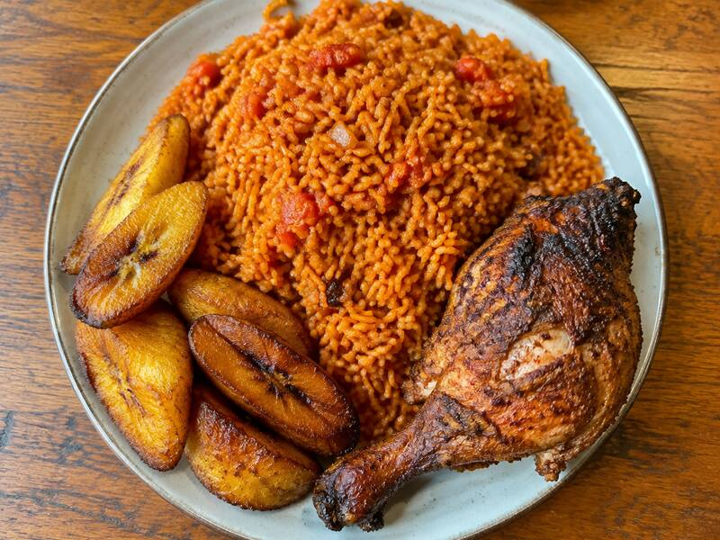
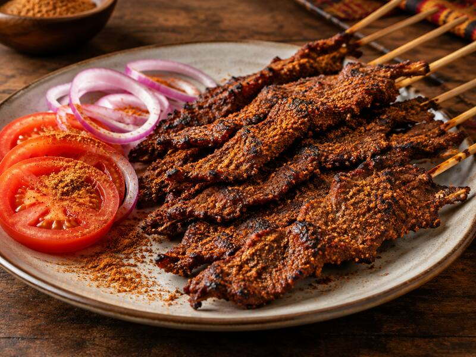

Est. 2004 · WEST AFRICAN KITCHEN
Fresh traditional meals, cooked with love.
Jollof simmered low, soups stirred slow, and dishes plated the way Mama always did it. Welcome home.
See the menu Reserve a table
Our story
Twenty years. One recipe book. A whole lot of love.
Mama's Kitchen started with one pot, one market trip, and a promise: that every plate leaving our kitchen would taste the way home tastes. Two decades on, that promise still shapes the way we cook.
Our rice is parboiled every morning. Our soups are stirred by hand. Our spices come from the same traders we started with in 2004. Nothing shortcut, nothing frozen, nothing rushed.
Mama Adaeze, Head Chef & Founder
Read our full storySignature dishes
What everyone orders.
Three plates that have been on our menu since day one, and still the first to sell out most weekends.

Party Jollof
₦8,500
Long-grain rice cooked over wood fire with tomato, scotch bonnet and a secret spice blend. Served with grilled chicken.
Signature

Egusi & Pounded Yam
₦8,000
Melon seed soup slow-cooked with spinach, assorted meats and dried fish. Served with hand-pounded yam.
Chef's pick

Suya Platter
₦5,500
Charcoal-grilled beef skewers rolled in roasted peanut spice, with raw onion, tomato and fresh pepper.
Street food
Mama's Kitchen in numbers
- 20+ years cooking
- 50+ dishes on the menu
- 15k meals served last year
- 4.9 average guest rating
What our guests say
I grew up thousands of miles from home. One plate of their jollof and I was eight years old again, sitting on my grandmother's floor. I don't know how they do it. I just know I'm back every Friday.
Chidinma O., regular since 2019
Hungry yet?
Reserve a table for the weekend, or stop by any night of the week. First-time guests get a complimentary chapman on the house.
Reserve a table